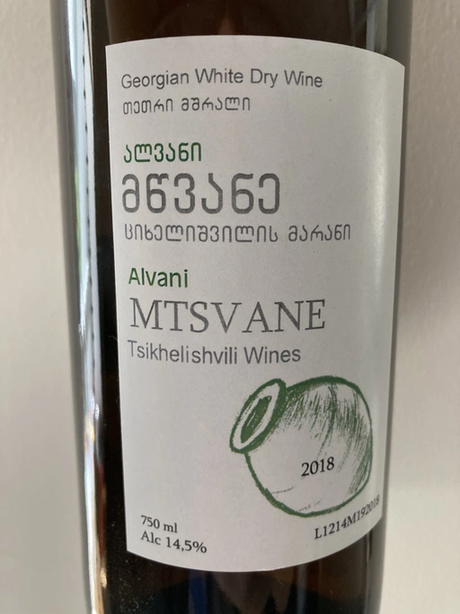

- Type
- White Still, Dry
- Producer
- Tsikhelishvili Wines
- Vintage
- 2018
- Location
- Georgia, Kakhetia
- Grapes
- Mtsvane, Rkatsiteli
- Alcohol
- 14.5
- Sugar
- 2.51
- Price
- 790 UAH
- Cellar
- N/A
Producer
Small producer from Kakhetia. Cultivates Rkatsiteli, Mtsvane and almost extinct Jgia. All wines are hand made. Uses qvevri, of course. Annual production is less than 5000 bottles.
Ratings
2021-05-25 - 7.75
Skin Party #3. Interesting orange wine. Good example of rustic, gastronomic palate with gorgeous (a little bit volatile) bouquet of apricot jam, pine cones jam, handful of spices, nuts, dried flowers, and pickled tomato. It’s thick, tannic and full-bodied. Rating is mostly because of the aroma, because the palate is one-dimensional and 14.5 abv are not well balanced here. Still, wonderful wine!